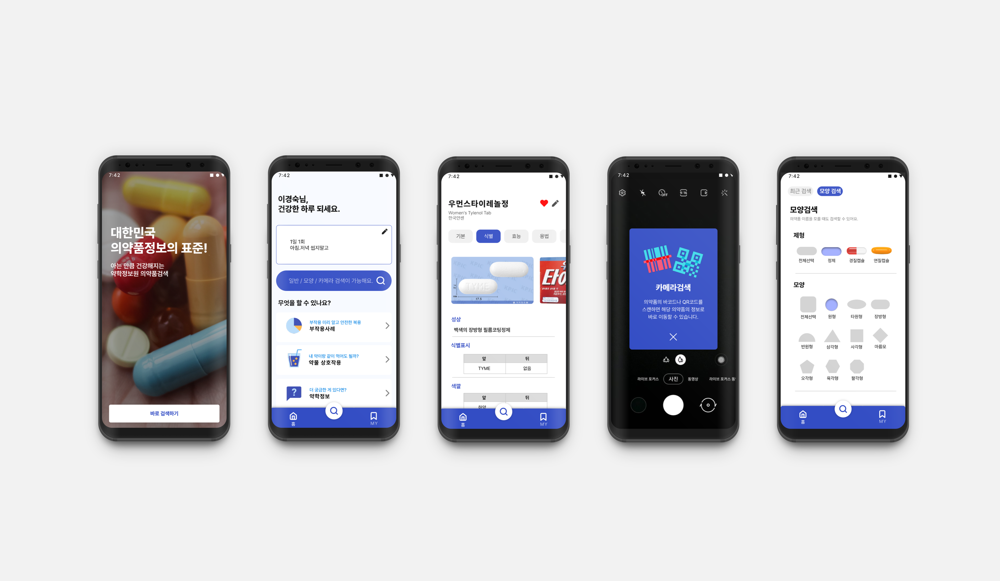

의약품검색
약학정보원 의약품검색 앱 리디자인

TEAM PROJECT
00 Overview
약학정보원 의약품검색 어플리케이션 리디자인
2015년에 약학정보원이 개발한 의약품 검색 앱의 UI/UX를 리디자인했습니다. 실제로 직접 사용하고 있는 어플로, 사용 중에 아쉽다고 생각했던 부분을 적극적으로 개선했습니다. 기존에 있던 다양한 기능은 살리되 어플 내에서 헤매지 않도록 화면을 명쾌하게 배치하고 사용자 편의성을 높이는 데 중점을 두었습니다.
project timeline
어플 선정 - 자료 리서치 - 타겟 선정 - 개선 사항 및 장, 단점 분석 - UX 비전 설정 - 무드보드 리서치 - 스타일 가이드 제작 - 와이어프레임 제작 - 화면 디자인 - 프로토타입 제작
01 Charged Task
리더이자 메인 디자이너로서 팀을 이끄는 역할
: 컨셉 결정, 리서치, 페르소나 제작, 와이어프레임, 런처 아이콘, 전반적인 화면 디자인, PT자료 제작
Research
1. 시장조사 : 국내 어플리케이션 시장에서 해당 분야가 갖는 비중, 해당 분야 사용자 참여율 리서치
2. 타겟분석 : 의료 분야 어플 지속 사용자의 연령과 성비 분석
3. 개선방향 : 재디자인하고자 하는 기존 어플의 장단점 분석
Persona
1. 구체적인 페르소나 제작 (50대 여성)
2. 페르소나를 바탕으로 행동 패턴 제작
3. 페르소나가 해당 어플을 사용할 때의 UX플로우 제작
Design
약물 정보와 의학 정보를 제공하는 어플이기 때문에 신뢰감을 테마로 잡았습니다. 기존의 레이아웃이 조금 복잡했기 때문에 과감히 타이틀 메뉴에서 상대적으로 덜 사용되는 기능을 빼고 더 단순한 레이아웃을 채택했습니다.
청결한 이미지를 나타내기 위해 기존 어플의 메인 컬러였던 파란색을 중심으로 디자인했습니다. 또한 매일 사용하는 어플이라는 컨셉에 맞게 귀여운 아이콘으로 일상적인 느낌을 추가했습니다. 보조색으로는 옅은 하늘색과 오렌지 계열의 보색을 사용하여 주목도를 높였습니다.
전문적인
건강한
선명한
Color
#FFF
#334DC4
#F7FAFF
#FFB74D
#000